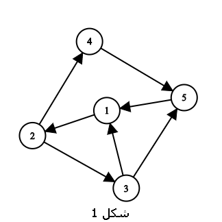
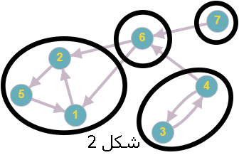
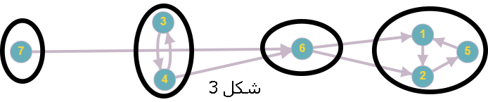

Strongly Connected Components¶
In graph theory, a strongly connected component (SCC) of a directed graph is a maximal subset of vertices where each vertex is reachable from every other vertex in the subset. Kosaraju's algorithm is one of the most efficient methods for finding SCCs. Below is its implementation:
1// Find strongly connected components using Kosaraju's algorithm
2vector<int> order;
3void dfs1(int u) {
4 vis[u] = true;
5 for (int v : adj[u])
6 if (!vis[v])
7 dfs1(v);
8 order.push_back(u);
9}
10
11vector<vector<int>> components;
12void dfs2(int u, vector<int>& component) {
13 vis[u] = true;
14 component.push_back(u);
15 for (int v : adjT[u]) // Transpose graph
16 if (!vis[v])
17 dfs2(v, component);
18}
19
20void kosaraju() {
21 order.clear();
22 components.clear();
23
24 fill(vis.begin(), vis.end(), false);
25 for (int u = 0; u < n; u++)
26 if (!vis[u])
27 dfs1(u);
28
29 fill(vis.begin(), vis.end(), false);
30 reverse(order.begin(), order.end());
31
32 for (int u : order)
33 if (!vis[u]) {
34 vector<int> component;
35 dfs2(u, component);
36 components.push_back(component);
37 }
38}

Steps of Kosaraju's algorithm:
First DFS pass: Perform a depth-first search (DFS) on the original graph and record vertices in the order of their completion times (post-order traversal). Store them in a stack.
Graph transpose: Create the transpose (reversed) graph by reversing all edge directions.
Second DFS pass: Process vertices in decreasing order of finishing times from the first pass. For each unvisited vertex, perform DFS on the transposed graph to find its strongly connected component.
Important notes:
Time complexity is O(n + m), where n is the number of vertices and m the number of edges.
The algorithm relies on the property that the SCC structure of a graph and its transpose are identical.
The order of vertices in the first DFS determines the discovery order of components in the second pass.
Basic Concepts¶
1class Graph:
2 def __init__(self):
3 self.vertices = [] # لیست رأسها
4 self.edges = [] # لیست یالها
Definition 3.4.1 (Strongly Connected Vertex Pair)¶
In a directed graph, we say the vertex pair \((v, u)\) is strongly connected if and only if there exists a path from \(v\) to \(u\) and a path from \(u\) to \(v\) .
For example, in Figure 1, vertices 2 and 4 form a strongly connected vertex pair.
Definition 3.4.2 (Strongly Connected Graph)¶
A strongly connected graph is a directed graph where every pair of vertices is strongly connected (Figure 1).
{kind=link}

Definition 3.4.3 (Strongly Connected Component (SCC))¶
A strongly connected component in a directed graph \(G\) is a subset of vertices of \(G\) whose induced subgraph forms a strongly connected graph, and is maximal—meaning no additional vertex can be included in it.
Lemma 3.4.4¶
Lemma Statement: Every vertex \(v\) in a directed graph \(G\) belongs to exactly one unique strongly connected component.
Proof: We use proof by contradiction. Suppose \(v\) is in two strongly connected components \(H\) and \(L\), and let \(u\) be a vertex in \(L\) that is not in \(H\). Since \(u\) and \(v\) are in the same strongly connected component, every vertex in \(H\) can reach \(v\) via a path, and from \(v\), there exists a path to \(u\). Similarly, there is a path from \(u\) to \(v\), and from \(v\) to any arbitrary vertex in \(H\). Hence, vertex \(u\) could be added to component \(H\), contradicting the maximality of \(H\). This contradiction proves the validity of the lemma.
Result 3.4.5¶
Any directed graph \(G\) can be partitioned into its strongly connected components. Figure 2 shows a directed graph where its strongly connected components are specified.
{kind=link}

Definition 3.4.6 (Inverse Graph)¶
The inverse graph of \(G\) is the graph obtained by reversing the direction of all edges in graph \(G\). Note that a graph is strongly connected if and only if its inverse is also strongly connected.
Definition 3.4.7 (Condensed Graph of Strongly Connected Components)¶
Let \(G\) be an arbitrary directed graph, and let \(H\) be a directed graph where each vertex corresponds to a strongly connected component in \(G\) , and each strongly connected component in \(G\) maps to exactly one vertex in \(H\). If \(v\) is a vertex in \(H\), we denote the strongly connected component corresponding to \(v\) in \(G\) by \(F(v)\). For any two vertices \(v\) and \(u\) in \(H\), there exists a directed edge from \(v\) to \(u\) for every directed edge from vertices in \(F(v)\) to vertices in \(F(u)\) in \(G\). Similarly, every edge from \(v\) to \(u\) in \(H\) corresponds to an edge from vertices in \(F(v)\) to vertices in \(F(u)\) in \(G\). In this case, \(H\) is called a condensed graph of strongly connected components of \(G\).
Theorem 3.4.8¶
Theorem Statement: The condensed graph of strongly connected components has no cycles.
Proof: Let \(G\) be an arbitrary directed graph and \(H\) be the condensed graph of the strongly connected components of \(G\). We use proof by contradiction. Suppose \(H\) has a cycle, and let two vertices \(v\) and \(u\) in \(H\) lie on this cycle. Since in a strongly connected component, there exists a directed path from every vertex to every other vertex in the same component, it follows that there must be a directed path from every vertex in \(F(v)\) to every vertex in \(F(u)\) and vice versa (why?). This implies that the vertices of \(F(v)\) and \(F(u)\) must belong to the same strongly connected component, contradicting the maximality assumption of the strongly connected components. Hence, \(H\) cannot have a cycle, and the theorem is proved.
Result 3.4.9¶
According to Theorem 3.3.2, the vertices of the condensed graph of strongly connected components can be topologically sorted. Therefore, the strongly connected components of any directed graph can be arranged in topological order such that all edges between two distinct components point in the same direction (Figure 3).
{kind=link}

Finding Strongly Connected Components¶
Now we aim to present an algorithm with appropriate time complexity for finding the strongly connected components of a graph.
Kosaraju's Algorithm¶
Description: First, we perform a \(DFS\) on the entire graph. Each time we exit a vertex, we push it onto a stack (note that the later we exit a vertex, the higher it is placed in the stack). Now, we consider the reversed graph. In each step, among all unseen vertices, we take the vertex at the top of the stack (e.g., \(v\)), perform a \(DFS\) starting from it in the reversed graph, and assign \(v\) and all vertices visited during this \(DFS\) to a new component. We repeat this process until all strongly connected components (SCCs) are found. Note that during the \(DFS\) on the reversed graph, once a vertex is visited, it is marked as seen and will not be revisited in subsequent traversals.
Correctness Proof: To prove the correctness of this algorithm, we first consider the following lemma, similar to one discussed in the previous section.
We define \(f(v)\) as the finishing time of the traversal for vertex \(v\). In other words, it determines the position of the vertex in the stack (the larger \(f(v)\) is, the lower the vertex is placed in the stack).
Lemma 1: If \(f(u) > f(v)\) (i.e., vertex \(u\) is higher than vertex \(v\) in the stack) and there is a path from \(v\) to \(u\), then there must also be a path from \(u\) to \(v\).
Proof of Lemma 1: We use proof by contradiction. Assume there is a path from \(v\) to \(u\) but no path from \(u\) to \(v\).
Since we have already visited vertex \(u\) during the initial traversal (why?), and there is no path from \(u\) to \(v\), we would not traverse \(v\) until the traversal of \(u\) is completed. However, if the traversal of \(u\) finishes and \(v\) remains unseen, \(u\) would be added to the stack before \(v\), implying \(f(u) < f(v)\). This contradicts our assumption. Thus, the lemma is proven.
Now, note that during the traversal of the reversed graph, we move along reversed edges. We take the vertex \(v\) at the top of the stack and traverse all vertices \(x\) for which there is a path from \(x\) to \(v\) in the reversed graph. According to Lemma 1, vertex \(v\) also has a path to \(x\) in the original graph. Therefore, \(v\) and all vertices visited during the \(DFS\) from \(v\) in the reversed graph belong to the same SCC.
Furthermore, no other vertices can belong to this SCC. If another vertex were part of this component, it would have a path to \(v\) and thus would have been visited during the \(DFS\) from \(v\).
Algorithm Complexity¶
In the above algorithm, we used \(DFS\) only twice. Therefore, the algorithm's complexity is \(O(n + m)\), where \(m\) and \(n\) represent the number of vertices and edges, respectively.
Lemma 3.4.10¶
Lemma Statement: Kosaraju's algorithm finds strongly connected components in the topological order of their sorted sequence.
Proof: We prove the claim by induction on the number of strongly connected components. The base case with one component is trivial. Assuming the claim holds for \(n-1\) components, we prove it for \(n\) components. Suppose the first component found by the algorithm (e.g., \(H\) ) has an incoming edge from another component \(L\) . In the reversed graph, this implies an edge exists from \(H\) to \(L\) . However, since \(L\) is discovered after \(H\) in the algorithm, during the traversal of \(H\) in the reversed graph, some vertices of \(L\) would be visited and mistakenly included in \(H\) —a contradiction, as components cannot overlap. Thus, the first component discovered has no incoming edges from other components and must be the first in the topological order. By the induction hypothesis, the remaining components are also discovered in topological order (why?). This completes the proof.
Algorithm Implementation¶
Note that at the end of the code, we output the components sorted in their topological order.
const int MX = 5e5 + 5;
int n, m; /// tedad ras ha va yal ha
vector<int> gr[MX], back_gr[MX], comp[MX]; /// vector mojaverat, vector mojaverat(yal haie barax), moalefe haie ghavian hamband
stack<int> sk; /// moratab kardan ras ha barhasbe tamam shodan dfs
bool mark[MX]; /// array mark baraie check kardane dide shodan ras ha
void dfs(int v){ /// dfs mamoli!
mark[v] = 1;
for(int u: gr[v])
if(!mark[u])
dfs(u);
sk.push(v);
}
void back_dfs(int v, int cnt){ /// dfs roie yal haie barax!
mark[v] = 1;
comp[cnt].push_back(v);
for(int u: back_gr[v])
if(!mark[u])
back_dfs(u, cnt);
}
int main(){
cin >> n >> m;
for(int i = 0; i < m; i++){
int v, u;
cin >> v >> u; /// shomare ras ha 0-based hast.
gr[v].push_back(u); /// in vector yal ha ra zakhire mikonad
back_gr[u].push_back(v); /// in vector barax yal ha ra zakhire mikonad
}
for(int i = 0; i < n; i++)
if(!mark[i])
dfs(i);
fill(mark, mark + n, 0); /// chon mikhahim dfs jadid bezanim, mark ra 0 mikonim.
int cnt = 0;
while(sk.size() != 0){ /// stack kheili kond ast. dar inja serfan baraie dark behtar stack estefade shode. behtar ast az vector estefade konid.
if(!mark[sk.top()]){
back_dfs(sk.top(), cnt); /// yek moalefe ra peida mikonim
cnt++;
}
sk.pop();
}
/// moalefe hara be tartib topo sort eshan chap mikonim
for(int i = 0; i < cnt; i++){
cout << i << ": ";
for(auto v: comp[i])
cout << v << ' ';
cout << endl;
}
return 0;
}
This book is made by The Shaazzz contributors.
It is publicly available with cc-by-sa license.
Last updated at اوت 27, 2025.
Rendered by Sphinx (4.3.2) and Minoo theme (Beta 0.9.7).